4-语义分析
语义分析
语义分析
词法分析（检查输入词）：源码 -> token 流
语法分析（检查语法上的组织）：token 流 -> 分析树 或者 AST（抽象语法树）
语义分析（检查输入的语义）：AST -> （修改后的）AST + 符号表
因为输入可能用了标识符（代词），我们需要考虑上下文
语义比语法更难考虑，同时 CFG 不能分析上下文信息
这一部分内容是编译器前端的最后阶段，也是最后拒绝的机会（语法不对）。
需要验证内容
先声明后使用
变量类型一致
表达式类型
...
收集有用的信息
决定标识符的变量
决定每个时间点下的变量
创造内部表示的形式
语义翻译的实现
属性文法：一次编译，语义分析在 parse 的同时完成
语法树遍历：两轮编译，第一次消化语法生成语法树，第二次遍历语法树验证是否通过所有的语义规则。严格区分语法和语义分析
符号表
符号表记录每个符号的信息
语义分析阶段创建，因为只有到了这个阶段才有足够信息
词法分析阶段准备，语义分析阶段填充
后续在代码生成（code generation）阶段使用
语法制导翻译（Syntax Directed Translation）
根据项目的语法结构（syntactic structure）来翻译。
语法结构：根据文法构建的项目的结构
parsing 和 分析树将会用来指导语义分析和翻译，比如 CFG 驱动的翻译
如何实现？
添加语义属性给每个文法符号
语义属性描述这个符号特点
属性有一个名字和相对应的值，比如一个字符串，一个数字，一种类型，记录的地址，分配的寄存器……
对于每个文法产生式，添加语义规则或者动作，这个动作描述如何计算产生式中符号的属性对应的值
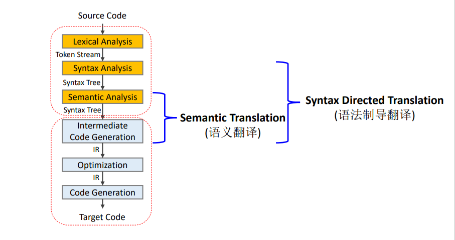
语义属性（Attributes）
语义属性可以表示任意含义，比如说
一条表达式的值：一个数字
一个 AST：一个指针
生成代码：一个字符串
类型检查：一个属性
格式：X.a 其中 X 代表一个符号，a 是它其中一个属性
语法制导定义（Syntax Directed Definitions）
SDD：用属性+语义规则来计算
属性和文法符号关联
产生式和语义规则关联
比如以下例子来计算一条表达式的值
\[E\rightarrow E_1+E_2\ \ RULE:\{E.val=E_1.val+E_2.val\}\]
\[E\rightarrow id\ \ RULE:\{E.val=id.lexval\}\]
语法制导翻译方案（Syntax Directed Translation scheme）
SDT：用属性+语义动作来计算
比如以下动作来计算一条表达式的值
\[E\rightarrow E_1+E_2\ \ \{E.val=E_1.val+E_2.val\}\]
\[E\rightarrow id\ \ \{E.val=id.lexval\}\]
SDD 和 SDT
SDD（语法制导定义）是 CFG 的推广，翻译的高层次规则说明。可以看成是一个有属性和语义规则的 CFG 文法。其中一个子集是属性文法，语义规则说明顺序不重要。
SDT（语法制导翻译方案）是 SDD 的补充，具体翻译的方案，将动作附在产生式中某个位置。执行的顺序重要。
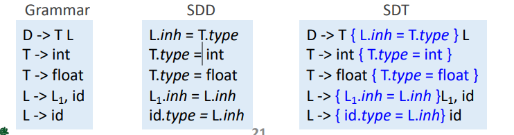
对于语法 \(A\rightarrow \alpha\{action_1\}\beta\{action_2\}\gamma\)
action1 执行在 \(\alpha\) 产生之后，在 \(\beta\) 之前
action2 执行在 \(\alpha\)，action1，\(\beta\) 但是在 \(\gamma\) 之前
语义规则：和 RHS 的位置无关
语义动作：在 RHS 的位置表示它应该何时发生，SDT 指定了执行顺序和每个动作的时间
SDD（语法制导定义）
SDD有两种属性，对于分析树中的一个节点 N 中的一个非终结符 A
综合属性（Synthesized attribute） ：
由节点 N 的某条产生式（A->...）的语义规则定义
某个节点 N 的综合属性只由子节点或者它本身来决定
继承属性（Inherited attribute）：
由节点 N 的父节点中某条产生式（...->...A...）的语义规则定义
由某个节点 N 的继承属性只由 N 的父节点，自身或者兄弟节点决定
综合属性
非终结符 A 的综合属性，只由它和它的子节点决定定义
终结符可以有综合属性，它的值由词法分析的时候提供
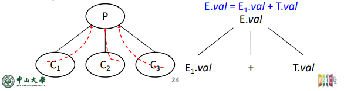
继承属性
非终结符的继承属性只有它的父节点，兄弟节点以及它自己决定
终结符没有继承属性，词法分析只会提供综合属性
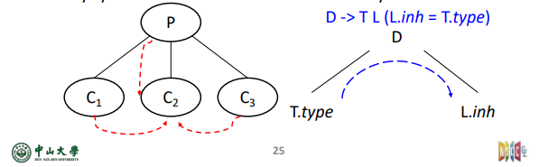
概念
副作用（side effect）：一般的属性值计算之外的功能，比如说打印
属性文法（Attribute grammar）：一个没有副作用的 SDD ，属性文法的规则仅仅通过 其他属性值和常量来定义一个属性值
标注分析树（Annotated parse-tree）：每个节点都有属性值的分析树，也可以标注语义动作
综合（继承）属性例子
如下，每个非终结符有单个综合属性 val ，终结符
digit 有综合属性 lexval
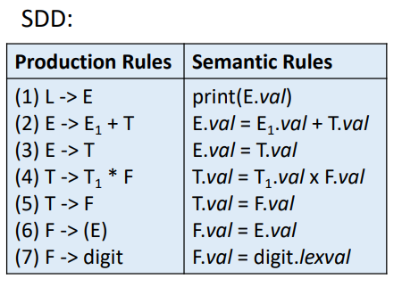
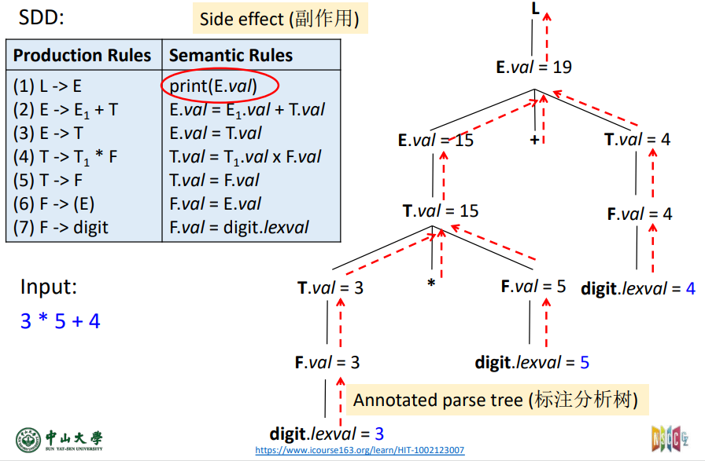
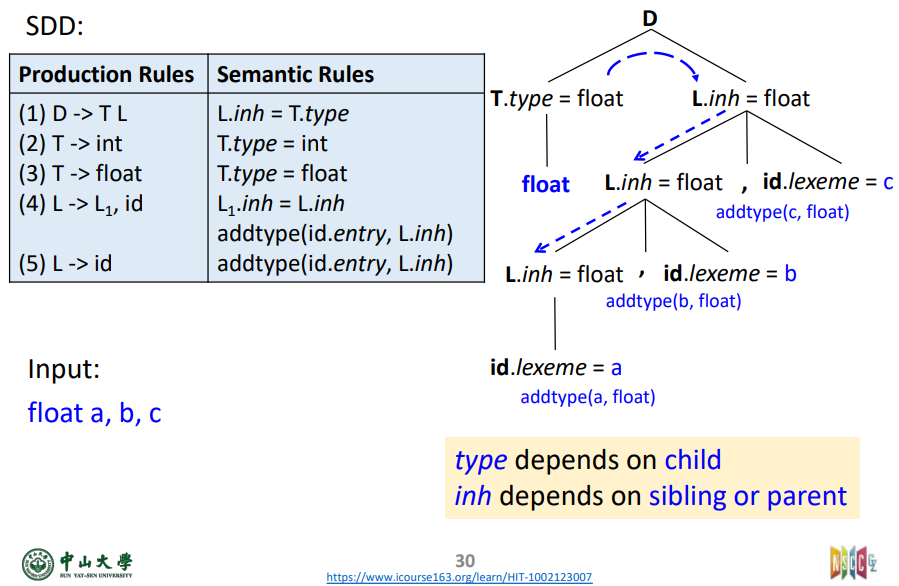
依赖图（Dependence Graph）
评估一个节点的某个属性值之前，我们必须评估如何计算（顺序）。标注分析树展示了每个节点的属性值，依赖图决定了属性值的计算，它描述了分析树的属性信息流
依赖图制定了顺序，用图的边指定顺序。
如果图中有环，那么就没有拓扑排序。如果没有环，那么就可以有拓扑排序
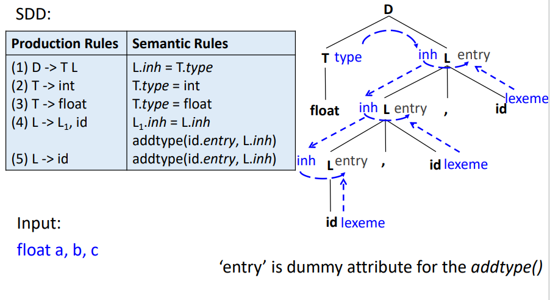
计算的顺序
只有综合属性那么自底向上计算就可以，但是又有综合属性又有继承属性就比较难看出它是否有循环依赖，但是某些 SDD 可以确保是没有循环依赖。
S-SDD
一个 SDD 如果只有综合属性那么这个 SDD 是 S-SDD
任何自底向上的顺序都可以计算属性值
LR 分析中实现
L-SDD
如果 SDD 满足这个条件才是 L-SDD：依赖图的边只能从左往右（无循环，处理顺序） 也可以这样等价：
这个 SDD 的属性要么是综合属性，要么是这样的继承属性。
对于 \(A\rightarrow X_1 X_2 ... X_n\) 的 \(X_i.a\) 只依赖于
A 的继承属性
\(X_1 X_2 ... X_{i-1}\) 的综合或者继承属性
\(X_i\) 本身的综合或者继承属性，但是不能有环
这样的 SDD 可以在 LL 分析中完成
SDT 的实现
SDT 是 SDD 的执行具体，将语义动作嵌入到 CFG 当中 它可以有两种实现
预先构造一棵分析树，然后遍历这棵树，应用规则或者行动在每个节点。所有的无环 SDD 和 SDT 都可以实现，因为树可以随意遍历实现任何顺序
在语法分析的过程中构造，在分析的过程中应用每个产生式的规则或者动作，但是只有一部分 SDD 和 SDT 可以实现，因为要按 parse 顺序来计算值
一般会选择第二种，因为更高效，更节约内存
两个关键的 SDD 子类
L-SDD，对应的文法是 LR 可解析文法
S-SDD，对应的文法是 LL 可解析文法
这两种 SDD 的语义动作可以转化成 SDT 中在某些时候执行这些动作
实现 S-SDD
S-SDD 到 SDT 的转换
将每个语义动作放在产生式的最后
所有动作都在产生式的末尾的 SDT 叫做后缀/尾部 SDT（postfix SDT's）
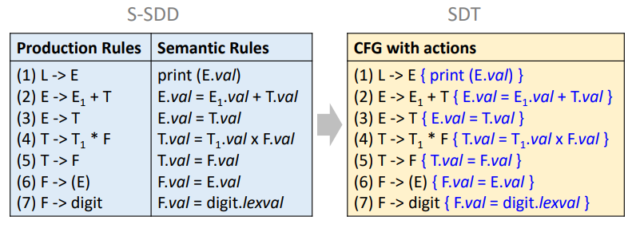
如果 S-SDD 对应的文法是 LR 可解析，SDT 可以在 LR 解析过程中实现得到。
借助归约实现，在归约的时候执行对应的动作。
扩展 LR 分析栈
栈中额外存放综合属性值
如果有多个属性，栈记录要足够大或者只保留指针
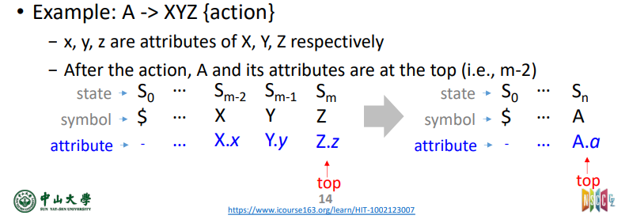
为了进行语义动作，我们需要改写一下动作
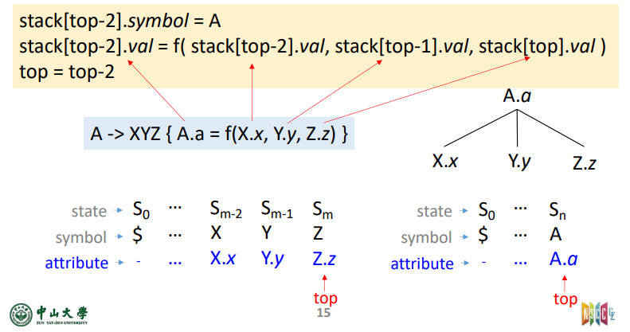
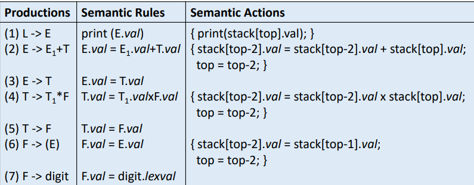
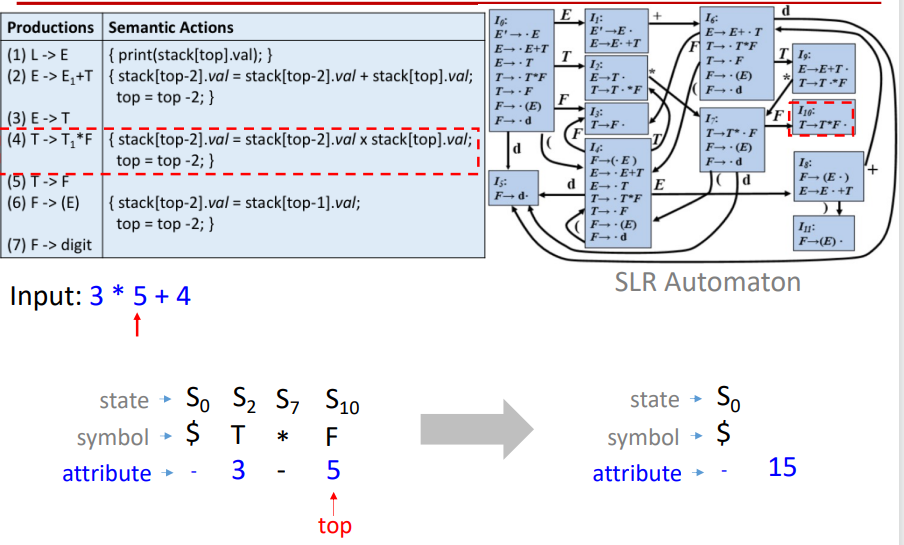
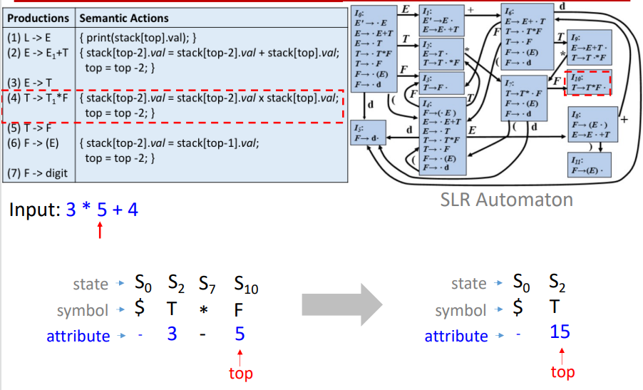
至此，我们可以通过把行动放在产生式最后将一个 S-SDD 转化到 SDT。 只要文法是 LR 可解析的，SDT 也可以自底向上解析和翻译。
实现 L-SDD
对于继承属性，将计算某个非终结符 A 的继承属性的语义规则插入到产生式右部中紧靠在 A 的本次出现之前的位置上
对于综合属性，将计算一个产生式左部符号的综合属性的规则放在这个产生式右部的末尾
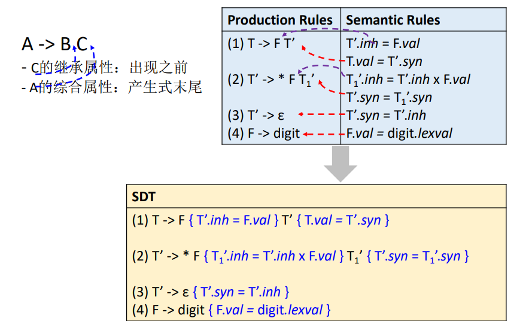
如果文法是 LL 可解析，那么可以在 LL 或者 LR 语法分析过程中实现
即可以有
LR 方式，但是要改写下语义动作
LL 方式
LL 递归下降
LL 非递归的预测分析
L-SDD 在 LL 语法分析中（非递归预测）
需要进行
扩展语法分析栈
动作记录，记录需要执行的动作
综合记录，用来记录非终结符的综合属性
管理属性信息
符号位放继承属性
综合属性在 A 的下面另外存放
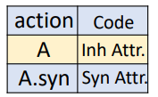
变量展开时（变量本身的记录出栈时）， 若其含有继承属性，则要将继承属性复制给后面的动作记录
综合记录出栈时，要将综合属性值复制给后面的动作记录
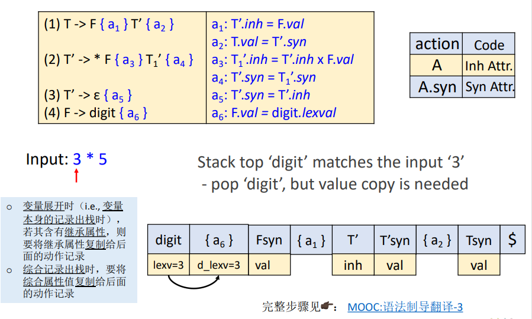
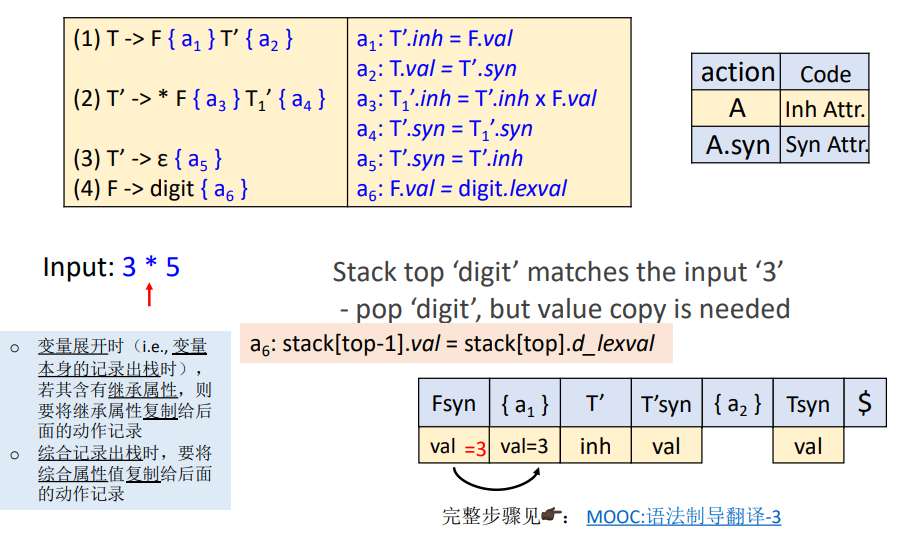
L-SDD 在 LR 解析
所有的 LL 都可以用 LR 语法解析，并且 S-SDD 也可以用自底向上方式实现
对于一个 LL 文法的 L-SDD ，自底向上解析问题在于语义动作可能会在表达式的任何地方
其中左属性确保了它们已经被计算了，但是计算需要之前的产生式已经在栈深处
解决方法：破解栈来挖出那些值
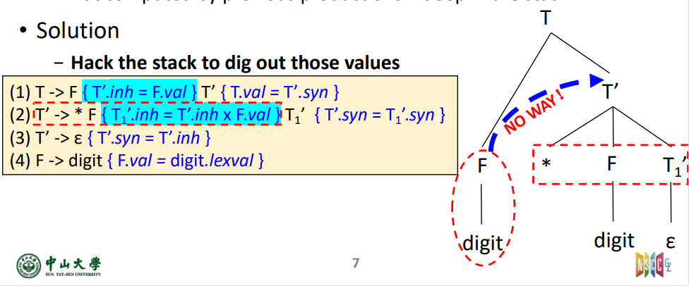
标记符号（Marker）
给定这样的 SDD :
\(A\rightarrow X \alpha \{Y.in=X.s\}Y\ | \ X\beta\{Y.in=X.s\}Y\)
\(Y\rightarrow \gamma \{Y.s=f(Y.in)\}\)
问题：无法加载栈位置对于 \(Y.in\)，因为 \(X.s\) 是和 \(Y\) 不同的另一个栈
解决方法：在 \(Y\) 之前插入标记符号 \(M_1\) 以及 \(M_2\)
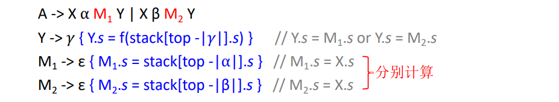
标记符号：一个用来标注和具有继承属性的符号等距位置的非终结符。它通常产生 \(\varepsilon\) 因为它只是动作的占位符
修改文法
给定 LL 文法的 L-SDD，我们可以将这个文法修改用来在 LR 解析过程中得到相同的 SDD
对于每个嵌入的动作，我们会使用标记符号来占位，同时对于每个标记符，我们会新增 \(M\rightarrow \varepsilon\)
对于产生式 \(A\rightarrow \alpha\{a\}\beta\)，需要用新的 \(a'\) 来联系上新的产生式
对于动作需要用到的任何关于 A 以及 \(\alpha\) 的属性，作为 M 的继承属性
用和 \(a\) 一样的动作来计算，但是让那些属性作为 M 的综合属性
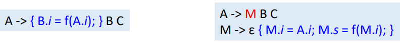
修改文法和栈操作
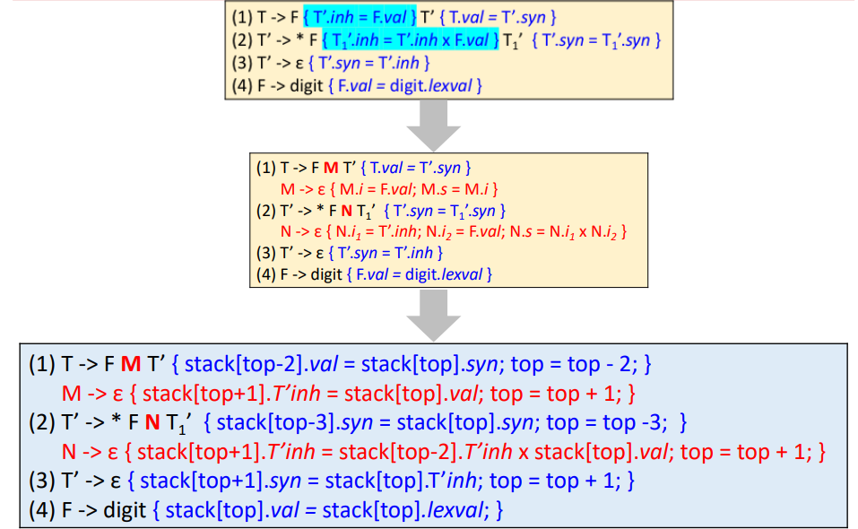
程序变量
程序变量是在进程中获取内存位置的变量名
声明（Declaration）：指定类型和名字
定义（Definition）：内存空间分配
绑定（Binding）
将 id 和内存位置绑定
作用域（Scope）
指定一个定义可以生效的区域，比如 C 的 auto/local，static ，global
两种类型 static 和 dynamic
静态作用域
程序文本就有作用域信息，最近闭合定义
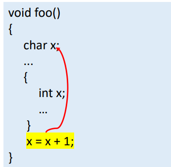
动态作用域
运行时决定，绑定到当前执行代码最近的定义
静态/动态优缺点
大多数语言刚开始都是动态，后面新增静态
动态：所有的绑定只在运行时决定，对于人和机器都很难计算出
静态：更少的编程错误，更高效，编译器可以直接决定内存位置，绑定信息
符号表（Symbol Table）
符号：标识符
符号表：一个用来追踪符号的编译器数据结构。
其中每个 entry 代表一个标识符的定义
维护定义的列表
进入或者退出作用域更新列表
用来绑定当前点用到的标识符
遍历语法树或者语法解析做语义动作得到
通常在生成执行二进制代码后废弃，机器码不再包含符号表，但是 debugger
符号表一般会包括，比如 gcc -g 。
需要进行维护，进入或者退出函数
符号表访问的时间影响编译前端的性能，需要权衡好时间和空间
使用栈来处理作用域
使用作用域栈，栈在进入或者退出一个栈的时候弹出压入
每个作用域需要一张符号表
进入一个作用域，创建一张新的符号表并且压入
退出一个作用域就弹出
从栈顶开始搜索
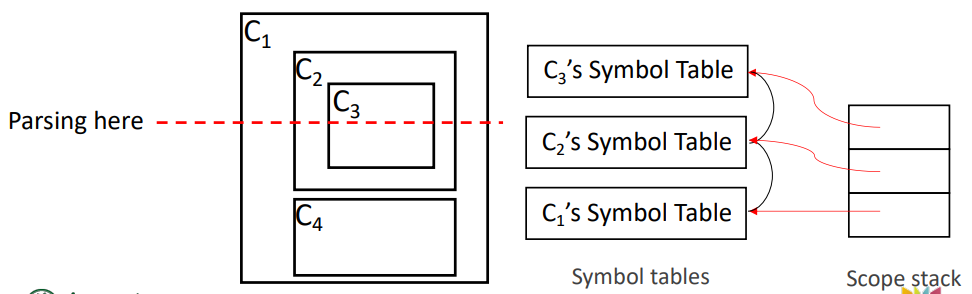
使用哈希链表来处理作用域
缺点
搜索效率不高，因为太多 hash 表，全局变量在栈底
空间效率不高
解决方法：使用一张 hash 表配合链表来记录所有作用域
插入：在链表的前面插上
搜索：根据 ID
删除：退出层次 k，移除所有层次 k 的符号（为了效率更高，可以每个 ID 都维护对于每个层次的列表）
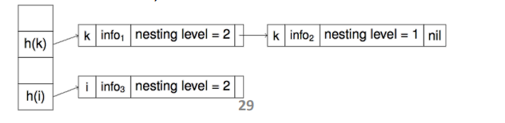
这种形式只维护当前活跃的作用域，无法引用到已经推出的作用域。
单张哈希表节约空间，并且获取更快。但是退出某一个作用域花销不小。
符号表存储的内容
entry
string ：标识符的名字
Kind 种类：比如函数，变量，结构体，类
attr 属性值：比如变量的存储地址，函数体的地址
各种类型可以很复杂
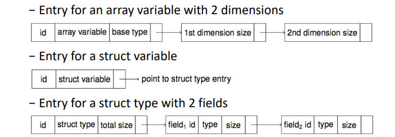
类型信息
每个变量和函数都有一个类型，这个类型之后的代码生成阶段会用到
用来计算需要分配多少空间
用来转换变量的使用
用来转换函数的调用
代码优化
类型检查
类型检查
检查类型一致性
静态类型检查，编译时检查。但是仅靠这个可能发现不了错误
动态检查，执行时。
cpp/Java是显示静态，更少BUG，但是更麻烦；python/JS是动态，更简单，但是可能更多BUG。
动态系统也会使用静态类型检查
静态系统也会使用动态类型检查
可靠（只接受正确），完备（只拒绝错误）